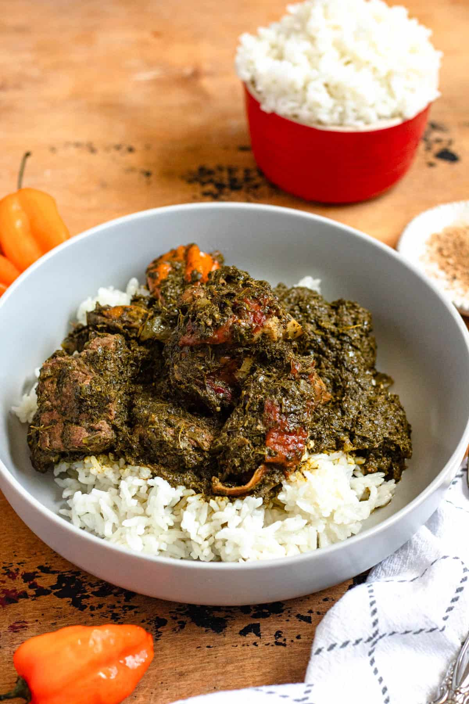

Home
Tres Leches Recipe
Cream Cheese Wontons Recipe
Cassava Leaf Recipe

Description
A staple in the Liberian cusine, a hearty meal with a complex flavour profile and a way to make your heart and tummy happy.
Ingredients
- 1 lb Stew Beef
- 1 lb Smoked Turkey, bone in (can also use any bone-in chicken)
- 1½ Tbsp Complete seasoning, divided
- 1 cup chopped white onion
- 1-3 Habanero Peppers
- 1 tsp Salt
- ½ tsp black pepper
- 1½ lb Frozen Bag Cassava Leaf, rinsed, strained and squeezed dry
- 2 Beef Maggi cubes
- ¼ cup creamy peanut butter
- 1 cup red palm oil
- (optional) 2 Tbsp Ground crayfish
Steps:
- Season the beef and turkey with 1 Tablespoon complete seasoning
and allow it to rest in the fridge for at least an hour but preferably overnight.
- Season the beef and turkey with 1 Tablespoon complete seasoning and allow it to rest in the fridge for at least an hour but preferably overnight.
- Add the cassava leaf to the pot with the meat and the remaining diced onions, bring it to a boil, seasoning with a maggi cube, ½ tbsp complete seasoning, and the remaining habanero peppers. Cover and cook for about 10 minutes.
- Once the cassava leaf cooks for 10 minutes, add the peanut butter into the cassava and let it cook for another 10 minutes or so, until the dish is mostly dry.
- Add red palm oil and ground crayfish into the pot and cook, uncovered, for another 10 minutes on low.
- Serve with white rice and enjoy!